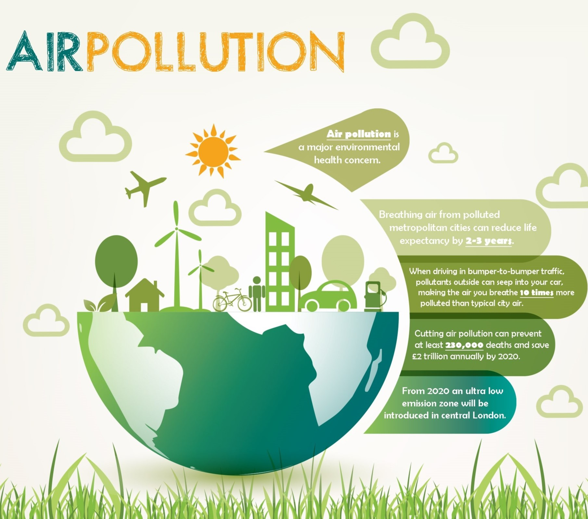
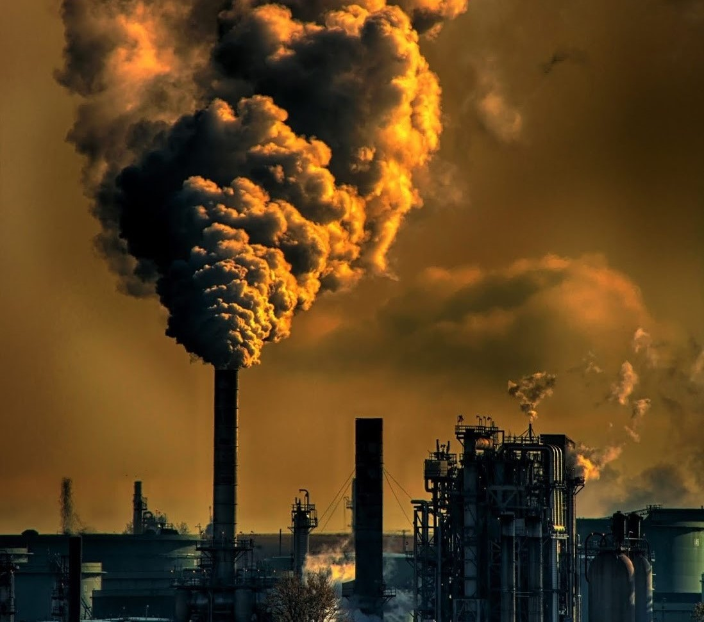

Introduction
Air pollution has critical impacts on our health and the state of our environment, and it is responsible for significant economic consequences due to these harms. Thus, working towards cleaner air through effective air quality monitoring and management is an essential part of building a healthier and more sustainable future. We break down types of air quality monitoring networks, various technologies that exist, the negative health and environmental impacts of poor air quality,
and the regulatory framework that exists for reducing pollution exposure.

What is air quality monitoring and why is it important?
Air quality monitoring refers to the collection and measurement of ambient air pollution samples. The data from these samples is compared to clean air standards and historical information regarding air quality levels, along with data reflecting its health and environmental impacts,
to determine the state of the air.Air quality is measured at a variety of levels — including federal, state, regional, and local levels. Air quality can change greatly between relatively close geographic locations, making it important to have a dense air pollution measurement network that reports air quality at both
a regional and smaller scale.Poor air quality has a multitude of negative effects, making it highly important to monitor air quality and understand exposure levels.
Air quality has also been recognized for its intricate relationship with climate change, including the ways that addressing some sources that contribute to air pollution may also help in mitigating climate change.
Objectives for mapping air quality
- Characterize the nature and severity of air pollution in the state
- Measure air quality against the Ambient Air Quality Standards and determine attainment status
- Identify trends in pollutant concentrations
- Provide regularly updated air quality information
- Determine levels of community exposure to harmful pollutants
| State |
Air Quality Index (AQI) |
| Andhra Pradesh |
78 |
| Assam |
65 |
| Bihar |
92 |
| Delhi |
205 |
| Gujarat |
72 |
| Haryana |
88 |
| Karnataka |
60 |
| Kerala |
45 |
| Jammu & Kashmir |
36 |
| Maharashtra |
90 |
| Odisha |
70 |
| Punjab |
95 |
| Rajasthan |
85 |
| Tamil Nadu |
55 |
| Uttar Pradesh |
90 |
| West Bengal |
75 |
*The data provided above is from few days ago.It may vary from real time data.
How we can improve air quality?
1. Reduce Your Contribution
Manage waste - Minimize emissions from your waste–compost food and garden items, recycle non-organic trash if available, reuse grocery bags and dispose of remaining trash by local collection. Never burn trash as this contributes directly to air pollution.
Cook and heat clean - Burning coal and biomass (e.g. wood) contributes to household air pollution when used for cooking and outdoor air pollution when used for heating. Check efficiency ratings for home heating systems and cookstoves to use models that save money and protect health.
Move mindfully - Use public transportation, cycling or walking to get around. Consider low or no emission vehicles if a car is necessary. Diesel vehicles, particularly older ones, are large contributors of black carbon which are carcinogenic for health and damaging to our climate.
Conserve energy - Turn off lights and electronics not in use. Use LED bulbs, if available, as a non-toxic alternative to CFLs, which contain mercury. Rooftop thermal solar systems may be an option for many to generate hot water affordably and photovoltaic systems can be a clean and healthy source of power.
Call for change - Call on local leaders to adopt national air quality standards that meet WHO guidelines. Support policies that strengthen emissions standards and provide incentives for purchase of cleaner vehicles, low-energy appliances and energy-efficient housing.
2. Minimize your exposure
Monitor your air - Check local air pollution levels each day and be aware of guidance from city or national authorities, to determine whether to limit outdoor activity or avoid hotspots where air pollution levels may be elevated.
Time outdoor activity - Shift regular outdoor activity away from times when air pollution levels are highest. In many cities, pollution peaks at late morning and early evening during rush hour traffic.
Know your surroundings - There is considerable evidence that children and adults living, or spending considerable time near busy highways may be more vulnerable to certain air pollution-related ailments.
Avoid heavy traffic - Avoid driving during peak times and keep windows closed while in traffic, as some research suggests that nearby exhaust can increase air pollution levels inside your car.
Assess your risk - Determine with your doctor if any existing conditions make you more susceptible to air pollution so you can more effectively balance the risks and benefits of future exposure.
Use effective protection - If a face mask is advised where you live, consult with credible sources to be sure it has a strong enough filter. Many face masks do not filter fine particulate matter (PM2.5 and under) which is among the most harmful.